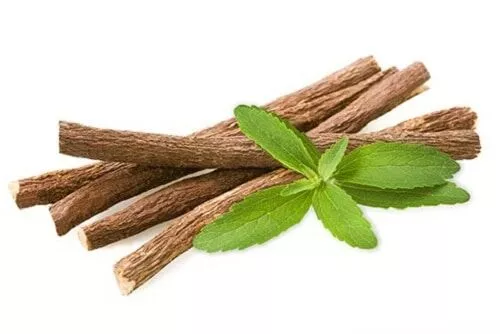
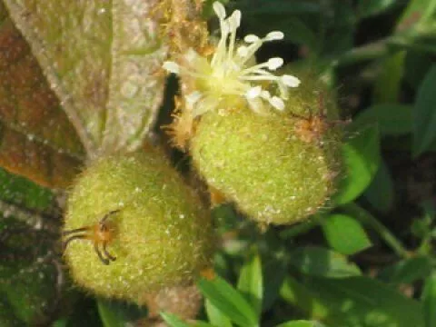
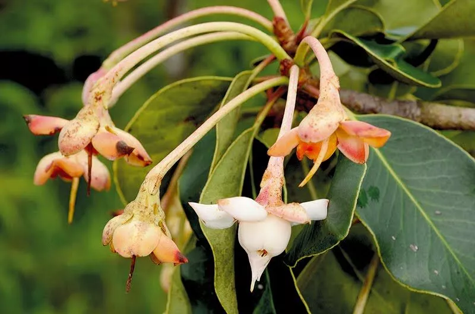
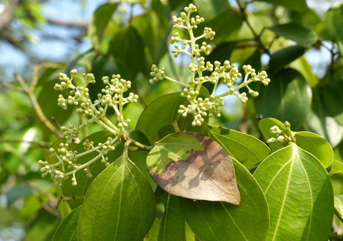
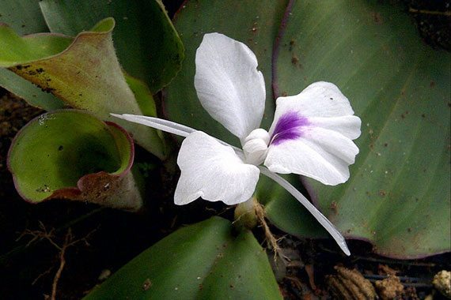

ถั่วดินโคก

ลักษณะทางพฤกษศาสตร์
เป็นสมุนไพรที่สูงประมาณ 10-30 เซนติเมตร เป็นไม้พุ่มทึบ กิ่งอ่อนเกลี้ยงและมีคราบสีขาว มีเปลือกสีเทาอมเขียว หรือสีน้ำตาลคล้ำ แตกเป็นร่องตามลำต้น เทพทาโรเป็นพืชใบเดี่ยว เรียงตรงข้ามกัน ใบจะเป็นรูปรีหรือรูปไข่ ยาว 7 – 20 เซนติเมตร
มีปลายแหลม โคนสอบ ก้านใบเรียว ดอกสีขาวและสีเหลืองอ่อน ออกเป็นช่อกระจุกปลายกิ่ง มีผลกลมเล็ก
เทพทาโร

ลักษณะทางพฤกษศาสตร์
เป็นไม้พุ่มขนาดเล็ก สูง 15-30 เซนติเมตร ลำต้นสั้นมาก ใบประกอบแบบขนนก เรียงสลับ แนบกับพื้นดินเป็นแนวรัศมี ใบย่อย 9-13 ใบ รูปวงรี รูปไข่หรือรูปขอบขนานแกมวงรี
ใบย่อยปลายใบรูปไข่กลับ กว้าง 1.5-3 เซนติเมตร ยาว 2-5 เซนติเมตร ผิวใบมีขนละเอียดสีขาว
ดอกช่อกระจะ ออกที่ปลายยอด ดอกย่อยจำนวนมาก กลีบดอกรูปดอกถั่ว สีม่วงเข้ม ก้านช่อดอกยาว ผลเป็นฝักรูปขอบขนาน มีขนละเอียดสีขาว มีเมล็ดเดียว
มะตูมนิ่ม

ลักษณะทางพฤกษศาสตร์
เป็นไม้ยืนต้น สูงประมาณ 10 – 15 เมตร มีใบเดี่ยวออกเรียงสลับ เป็นรูปรีหรือใบหอก ปลายแหลม ขอบใบหยัก มีกลิ่นหอม ยอดอ่อนสามารถนำมากินเป็นผักสดจิ้มน้ำพริกได้
ออกดอกเป็นช่อตามซอกใบและปลายยอด มีกลิ่นหอมแรงและไกล ผลรูปรีคล้ายไข่ สีเขียว เปลือกแข็ง สุกเต็มที่จะเป็นสีเหลือง
เปลือกนิ่มใช้นิ้วกดจะบุ๋มลง เนื้อเป็นสีเหลืองมีเมล็ดมาก รสชาติหอมหวานปนฝาด
มะหาด

ลักษณะทางพฤกษศาสตร์
ป็นไม้ยืนต้นขนาดใหญ่และเป็นไม้ผลัดใบ พบในป่าดิบ ป่าเต็งรัง ป่าเบญจพรรณ พบมากทางภาคใต้ของไทย มีความสูงประมาณ 15 – 20 เมตร ลำต้นตรง ทรงพุ่มหรือแผ่กว้าง
เปลือกลำต้นเป็นสีดำ สีเทาแกมน้ำตาล สีน้ำตาลอมแดง หรือสีน้ำตาลเข้ม เมื่อต้นแก่มาก ๆ ผิวเปลือกจะหยาบ ขรุขระ แตกเป็นสะเก็ด
มีรอยแตกและมียางไหลซึมออกมาจนแห้งติดลำต้น กิ่งอ่อนและยอดอ่อนมีขน
เร่ว

ลักษณะทางพฤกษศาสตร์
เป็นสมุนไพรล้มลุก มีเหง้าที่เป็นลำต้นอยู่ใต้ดิน พบในภาคอีสาน ภาคเหนือ และภาคกลาง ใบเร่วจะเป็นใบเดี่ยวออกเรียงสลับ สีเขียวเข้มเป็นมัน ใบรี ยาว 12 – 20 เซนติเมตร กว้าง 4 – 7 เซนติเมตร
ปลายใบแหลมห้อยโค้ง ก้านใบมีลักษณะเป็นแผ่นสั้น ออกดอกสีขาวเป็นช่อแทงขึ้นจากเหง้า คล้ายดอกข่า กลีบมีสีชมพูอ่อน และเปลี่ยนเป็นสีน้ำตาลเทาตอนแก่จัด
ก้านช่อไม่ยาว ผลเร่วมีสีน้ำตาล และมีขนสีน้ำตาลคลุม รสเฝื่อนออกเปรี้ยว
หัวร้อยรู

ลักษณะทางพฤกษศาสตร์
เป็นพืชจำพวกหัว ที่อาศัยเกาะตามต้นไม้อื่น ต้นแก่มีหัวกลมโตขนาดเท่าลูกมะพร้าวห้าว ภายในหัวเป็นรูย้อนขึ้น ย้อนลง พรุนไปทั่ว เมื่อผ่าออกดู มักมีมดดำอาศัยอยู่เต็มหัว
ต้องนำมาแช่น้ำทิ้งไว้จนกว่ามดจะออกไปหมด เนื้อนิ่ม สีน้ำตาลไหม้ มักขึ้นตามคาคบไม้ หัวมีรสเมา
กระทุ่มนา

ลักษณะทางพฤกษศาสตร์
เป็นไม้ผลัดใบ สูงประมาณ 8 – 15 เมตร ทรงพุ่มกลม พบทางตอนใต้ของจีนเรื่อยมาจนถึงมาเลเซีย ในไทยพบในเขตป่าเบญจพรรณ
พื้นที่โล่งใกล้น้ำ หรือตามทุ่งนา เปลือกเป็นสีเทา จะหลุดออกเป็นแผ่นเล็ก ๆ ทำให้เปลือกดูขรุขระ ใบเดี่ยวรูปไข่ ออกเรียงสลับ
ดอกมีสีเหลืองเป็นช่อซ้อนกัน 3 ชั้น ออกตามซอกใบ มีกลิ่นหอมแรง กระทุ่มนามีผลกลมหรือรูปไข่ ผิวขรุขระและแข็ง
ขันทองพยาบาท

ลักษณะทางพฤกษศาสตร์
เป็นสมุนไพรที่พบในแถบเอเชียตะวันออกเฉียงใต้ ในอินเดีย ในป่าเบญจพรรณ ป่าดงดิบ ป่าไม้ผลัดใบ เป็นไม้ยืนต้น สูงประมาณ 7 – 13 เมตร ทรงพุ่มทึบ กิ่งก้านที่ออกมาจะห้อยลู่ลง
เปลือกสีน้ำตาลแก่แตกเป็นร่องตามยาว เนื้อไม้สีขาว ส่วนใบเป็นใบเดี่ยวหนา เหนียว และแข็ง ปลายใบแหลมหรือมน โคนแหลม หลังใบเรียบลื่นเป็นมัน ออกดอกเป็นช่อกลิ่นหอม
มีสีเขียวอมสีเหลืองอ่อน ขันทองพยาบาทจะออกดอกในช่วงเดือนมีนาคม – พฤษภาคม ผลกลม ผิวเกลี้ยง ลูกอ่อนสีเขียว สุกแล้วจะเป็นสีเหลืองอมส้ม
จุกโรหินี

ลักษณะทางพฤกษศาสตร์
เป็นสมุนไพรที่เป็นไม้ล้มลุก ตามข้อมีรากงอกมีไว้สำหรับเลื้อยทอดเกาะตามต้นไม้ พบได้ทั่วไปตามป่าชายเลน ป่าเบญจพรรณ ใบจุกโรหินีจะเป็นใบเดี่ยว
มีความพิเศษคือ ใบมี 2 แบบ ใน 1 ต้น คือ แบบแรกคล้ายถุงปากแคบสี่เหลี่ยม ผิวด้านนอกเกลี้ยง สีเขียวหรือเหลือง
ด้านในสีม่วง แบบที่ 2 เป็นใบแบบทั่วไป กลม หนา ปลายใบมน และอวบน้ำ ส่วนดอกนั้นออกเป็นช่อสั้น ๆ มี 5 กลีบ แต่ละช่อมีดอกประมาณ 6 – 8 ดอก
ผลของจุกโรหินีออกเป็นฝักสีเหลืองแกมส้ม ผิวขรุขระ
ชะเอมไทย
ลักษณะทางพฤกษศาสตร์
สมุนไพรต้นเป็นเถา มีตุ่มหนามทื่อ ๆ ขนาดเล็กตามลำต้นและกิ่งก้าน เปลือกผิวขรุขระออกเป็นสีน้ำตาลอ่อน น้ำตาลแก่ และสีดำ เนื้อไม้เป็นสีเหลืองอ่อน ๆ มีรสหวาน
ชิงชี่

ลักษณะทางพฤกษศาสตร์
ไม้พุ่มกึ่งเลื้อยคด ลำต้นสีเทา ผิวเรียบเกลี้ยง ผิวเปลือกเป็นกระสีขาว ก้านอ่อนสีเขียว โตเต็มที่สูงประมาณ 2 – 5 เมตร เป็นไม้ใบเดี่ยวเรียงสลับ
ใบรูปรีหรือรูปไข่ ปลายใบมนหรือแหลม โคนใบสอบ ออกดอกแบบเดี่ยวเรียงเป็นแถว 1 – 7 ดอก ตามซอกใบที่บริเวณปลายกิ่ง
ผลของชิงชี่ลักษณะค่อนข้างกลม เมื่อผลสุกจะมีสีเหลืองแดงหรือดำ เนื้อหวานรับประทานได้
ตับเต่า

ลักษณะทางพฤกษศาสตร์
ม้ยืนต้นขนาดเล็กถึงขนาดกลาง ทรงพุ่ม โตเต็มที่มีความสูงประมาณ 10 – 15 เมตร เปลือกต้นเป็นสีน้ำตาลปนเทา
เปลือกด้านในเป็นสีน้ำตาลแดง พบได้ในทุกภาคของประเทศไทย ยกเว้นทางภาคใต้ ส่วนใหญ่จะพบในป่าเบญจพรรณ
นางแย้มป่า

ลักษณะทางพฤกษศาสตร์
ไม้พุ่มขนาดเล็ก ต้นตั้งตรง ลำต้นและกิ่งอ่อนสีแดงหรือสีดำอมน้ำตาล เป็นไม้ใบเดี่ยว ออกเรียงสลับ ลักษณะใบเป็นรูปไข่หรือรูปหัวใจ
โคนใบสอบ แผ่นใบสีเขียวเข้ม ออกดอกเป็นช่อที่ปลายกิ่ง กลีบดอกสีขาว มีกลิ่นหอมอ่อน ๆ ในตอนเช้า ผลของนางแย้มป่ารูปทรงกลม ผลอ่อนสีเขียวผิวมัน
เมื่อผลสุกจะเป็นสีดำ พบได้ทุกภาคของประเทศไทย ตามป่าเบญจพรรณ และป่าดิบ
ปลาไหลเผือก

ลักษณะทางพฤกษศาสตร์
ไม้พุ่มขนาดเล็ก ลำต้นตรง เปลือกมีสีน้ำตาล กิ่งก้านสั้น ออกเป็นกระจุกที่ปลายยอด กิ่งอ่อนจะมีขนสีน้ำตาล โตเต็มที่สูงได้ถึง 10 เมตร ออกดอกเป็นช่อ
พวงใหญ่กระจุกอยู่ที่ปลายกิ่งและซอกใบ ช่อดอกยาวได้ถึง 30 เซนติเมตร
พังคี
ลักษณะทางพฤกษศาสตร์
ไม้พุ่มขนาดเล็ก เปลือกลำต้นสีเทา ลำต้นตรงสูงประมาณ 50 เซนติเมตร เป็นพืชใบเดี่ยว ใบมีความสาก เป็นทรงรีขึ้นเรียงตรงข้ามกันตามกิ่งและก้าน
ก้านใบออกเป็นสีเหลือง ปลายใบแหลม โคนใบมน ออกดอกเป็นช่อที่ปลายยอด
มะคังแดง

ลักษณะทางพฤกษศาสตร์
ไม้ยืนต้นกึ่งไม้พุ่ม ขนาดเล็กถึงกลาง โตเต็มที่มีความสูงได้ถึง 10 เมตร เป็นไม้ใบดกหนา เปลือกลำต้นสีน้ำตาลแดง มีขนนุ่ม ๆ ปกคลุมทั่วลำต้น โคนต้นและกิ่งมีหนามรอบ
มะคังแดงเป็นไม้ใบเดี่ยว ใบรูปวงรี โคนใบมน ผิวใบมีขนหลังใบเรียบ ออกดอกเป็นช่อขนาดเล็กที่ซอกใบปลายกิ่ง ดอกย่อยสีเขียว ส่วนใหญ่พบตามป่าเบญจพรรณ ป่าดิบแล้ง
สะค้าน

ลักษณะทางพฤกษศาสตร์
ไม้เถาขนาดกลาง สกุลเดียวกับพริกไทย ลำต้นเป็นข้อปล้อง เป็นไม้เปลือกอ่อน เนื้อไม้ด้านในสีขาว เป็นพืชใบใบเดี่ยว รูปใบทรงหอกกว้าง ใบสีเขียวเข้ม ปลายใบแหลม ออกดอกเป็นช่อยาวเล็ก
ดอกสีเหลืองอ่อนมีดอกย่อยอัดแน่น ส่วนใหญ่พบได้ในป่าดิบชื้นทุกภาคในประเทศไทย
สารภีป่า
ลักษณะทางพฤกษศาสตร์
เปลือกด้านในเป็นสีน้ำตาลแดง สารภีป่าเป็นไม้ใบเดี่ยว ออกใบแน่นที่ปลายกิ่ง ลักษณะใบเป็นรูปใบหอก ปลายใบแหลม โคนใบสอบ ส่วนใหญ่แล้วในประเทศไทยพบได้ทั่วไปในป่าสูงหรือบริเวณสันเขา
เช่น ป่าสน ป่าดิบ และป่าเต็งรัง
อบเชยไทย
ลักษณะทางพฤกษศาสตร์
ไม้ยืนต้นขนาดเล็กจนถึงขนาดกลางไม่ผลัดใบ เปลือกลำต้นสีเทาน้ำตาล ผิวเปลือกเรียบบาง เป็นไม้ใบเดี่ยวลักษณะใบเป็นรูปไข่ ปลายใบแหลม ขอบใบเรียบ ผิวใบเรียบมัน ใบอบเชยมีสีเขียวเข้ม ออกดอกเป็นช่อที่ปลายกิ่ง
ดอกสีเหลืองขนาดเล็กมีกลิ่นหอม ผลมีสีดำคล้ายรูปไข่
เฉียงพร้านางแอ

ลักษณะทางพฤกษศาสตร์
ไม้ยืนต้นขนาดกลาง ลำต้นตั้งตรง ทรงพุ่ม เป็นไม้ไม่ผลัดใบ โตเต็มที่มีความสูงประมาณ 25 – 30 เมตร เปลือกต้นเป็นสีน้ำตาลอมแดง และสีน้ำตาลอมเทา ผิวเปลือกเรียบ หรืออาจแตกเป็นร่องลึก ใบเดี่ยวทรงรี
ออกใบเรียงตรงข้ามแบบสลับ ออกดอกเป็นช่อแบบเป็นกระจุกสั้น ๆ และมีดอกย่อย ผลสุกกินได้ มีรสเปรี้ยวอมหวาน
ต้นเฉียงพร้านางแอบางต้นอาจมีรากออกมาจากส่วนโคนต้น สามารถพบได้ทุกภาคในประเทศไทย ที่เป็นป่าเบญจพรรณ ป่าดิบแล้ง และป่าดิบชื้น
เถาเอ็นอ่อน

ลักษณะทางพฤกษศาสตร์
เป็นไม้เถาเลื้อยเนื้อแข็ง เกาะเกี่ยวกับต้นไม้อื่น ลำต้นกลมมีลายประ เปลือกเรียบหนาสีน้ำตาลอมดำหรือสีแดงเข้ม เถาแก่เปลือกจะหลุดร่อนออก มียางสีขาวข้น เป็นไม้ใบเดี่ยว ออกใบเรียงตรงข้ามกัน
ลักษณะใบเป็นรูปรี ปลายใบมน โคนใบสอบ ขอบใบเรียบ แผ่นใบหนา ออกดอกเป็นช่อ ดอกย่อยมีสีเหลืองอ่อนหรือสีขาวอมเหลือง ออกผลเป็นฝัก ลักษณะฝักเป็นรูปทรงกระสวย
เถาเอ็นอ่อนพบมากตามพื้นที่ป่าราบทางภาคกลางของประเทศไทย
เปราะหอม
ลักษณะทางพฤกษศาสตร์
จัดเป็นไม้ล้มลุก มีอายุราว 1 ปี มีทั้งเปราะหอมแดงและเปราะหอมขาว ลำต้นเป็นเหง้าหรือหัวอยู่ใต้ดิน เนื้อภายในเหง้าสีเหลืองอ่อน มีกลิ่นหอมเฉพาะตัว เป็นพืชใบเดี่ยว แทงใบขึ้นมาจากเหง้าใต้ดิน ประมาณ 2 – 3 ใบ
มีลักษณะแผ่ราบไปตามพื้นดินเล็กน้อย เนื้อใบหนา ลักษณะใบค่อนข้างกลม ปลายใบแหลม โคนใบมน ก้านใบเป็นกาบ ขนาดใบกว้างประมาณ 5 – 10 เซนติเมตร ออกดอกเป็นช่อ ต้นเปราะหอมเติบโตได้ดีในที่ร่มช่วงฤดูฝน
พบมากทางภาคเหนือของประเทศไทย
แหล่งข้อมูล
22 สมุนไพรไทย ที่เสี่ยงต่อการสูญพันธุ์!-บ้านและสวนhttps://mgronline.com/
https://kaset.today/